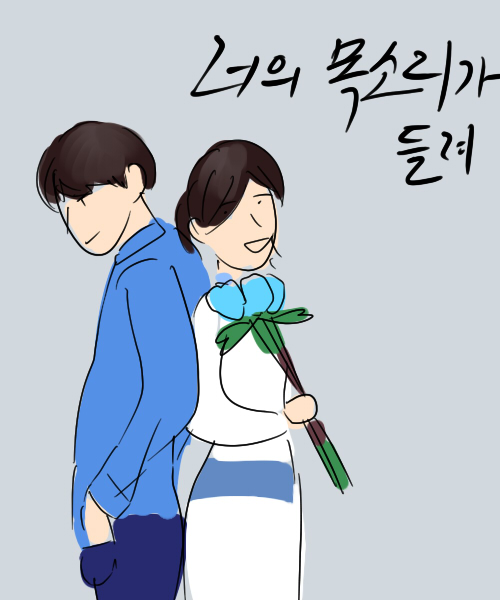

|  | 제목 : 너의 목소리가 들려 | 연출 : 조수원 극본 : 박혜련 |
| ▶작품 소개 속물 국선전담변호사 장혜성과 사람의 마음을 읽는 신비의 초능력 소년 박수하, 바른 생활 사나이 차관우가 만나며 벌어지는 사건들을 흥미진진하게 그린 드라마 | ||
| ▶제작자 리뷰 연상의 변호사와 연하의 남자가 알콩달콩 연애하는 이야기.. 일 것 같았는데 의외로 무섭고 흥미진진한 장면이 많다. 한 번쯤 보는 것도 괜찮을 듯. 특히 재판물 좋아하는 사람에게 추천. |
||
| 제작자 평점 ★★★★★ | 최고 시청률 24.1% | |
| 장르 : #로맨스 #스릴러 #범죄 #재판 | ||